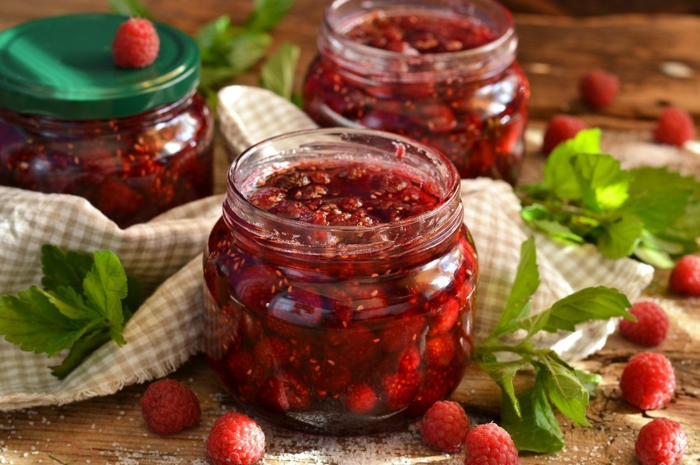

Кулинарный цех "Пирожок"
Блюда по домашним рецептам - вам понравится!
Домашнее варенье

Домашнее варенье - это ароматное и вкусное лакомство из фруктов или ягод.
Это идеальное дополнение к завтраку, чаю или десерту, добавляющее яркие нотки свежести и сладости.
Ингредиенты:
- Фрукты или ягоды по выбору (например, клубника, вишня, абрикосы)
- Сахар по вкусу
- Лимонный сок (по желанию)
- Вода
Рецепт приготовления:
- Подготовьте выбранные фрукты или ягоды, вымойте их и удалите косточки или семена при необходимости.
- Нарежьте продукты на кусочки или дольки.
- Положите нарезанные ингредиенты в кастрюлю, добавьте сахар и немного воды. Поставьте на средний огонь.
- Доведите смесь до кипения, затем уменьшите огонь и варите, помешивая, до тех пор, пока фрукты не станут мягкими и жидкость не загустеет.
- По желанию добавьте лимонный сок для придания свежести и кислинки.
- Готовое варенье переложите в стерилизованные банки и закатайте.
- Дайте варенью остыть и настояться перед употреблением. Храните в холодильнике.